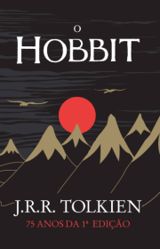
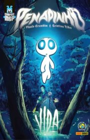
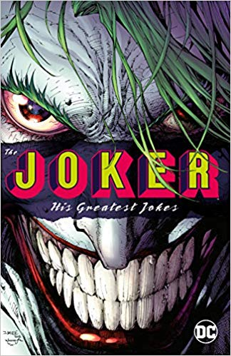
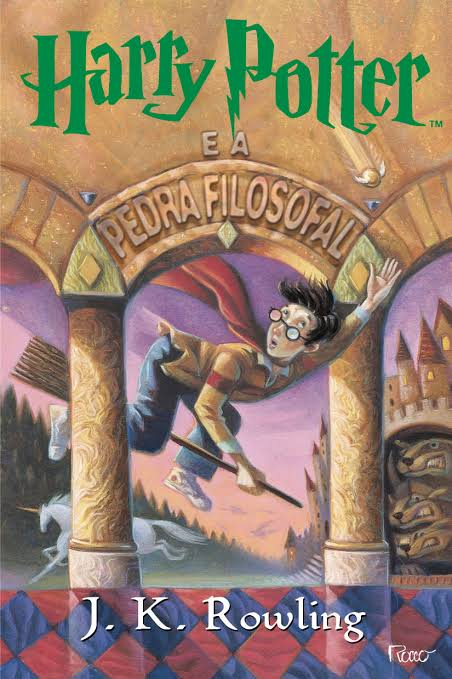
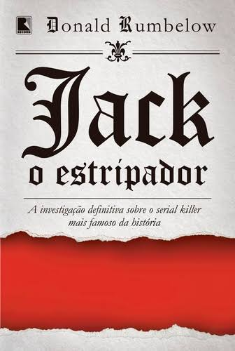

|  |
O HobbitBilbo Bolseiro vive uma vida tranquila e pacata em sua toca hobbit, até que um dia recebe a visita do Mago Gandalf, que o convida para fazer parte de uma grande aventura. O hobbit, entretanto, não gosta de nada que altere sua rotina, então recusa educadamente a oferta recebida, e com isso acredita estar livre de preocupações. mortais. |
|  |
Penadinho - VidaPenadinho – Vida é uma HQ de Paulo Crumbim e Cristina Eiko, que através do projeto Graphic MSP criaram uma história com os personagens de Mauricio de Sousa, acrescentando nova identidade visual a eles e expandindo o universo da Turma do Penadinho. |
|  |
The JokerDesde a estréia do personagem em 1940, o Coringa tem sido o maior inimigo do Cavaleiro das Trevas e rapidamente se tornou um dos vilões mais populares do mundo. Aparecendo em várias séries de televisão, ao vivo e animadas, em vários filmes de grande sucesso e em inúmeros videogames, o Coringa é um personagem tão atemporal quanto lendário. |
|  |
Harry Potter e a Pedra FilosofalHarry Potter é um garoto órfão que vive infeliz com seus tios, os Dursleys. Ele recebe uma carta contendo um convite para ingressar em Hogwarts, uma famosa escola especializada em formar jovens bruxos. Inicialmente, Harry é impedido de ler a carta por seu tio, mas logo recebe a visita de Hagrid, o guarda-caça de Hogwarts, que chega para levá-lo até a escola. Harry adentra um mundo mágico que jamais imaginara, vivendo diversas aventuras com seus novos amigos, Rony Weasley e Hermione Granger. |
|  |
Jack o EstripadorUm exame dos fatos, teorias e fascinações que cercam o maior mistério policial da história. Em 1888, no distrito londrino de Whitechapel, prostitutas foram assassinadas em série, de forma cruel e sádica. Chamado para investigar o caso, o inspetor Fred Abberline foi incumbido de rastrear e capturar o até hoje misterioso assassino que ficaria conhecido como Jack, o Estripador. Apresentando todas as evidências conhecidas neste relato completo sobre o serial killer mais infame de todos os tempos, Donald Rumbelow submete as teorias sobre a identidade e a motivação do famoso assassino a intenso escrutínio, com uma lista de possíveis suspeitos que vai desde um ex-presidiário paupérrimo e um marinheiro mercante até Lewis Carroll, autor de Alice no País das Maravilhas, e Randolph Churchill, pai do ex-primeiro-ministro inglês Winston Churchill. |